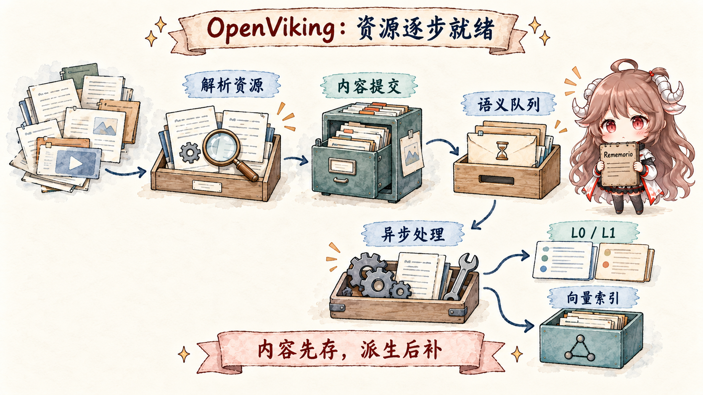
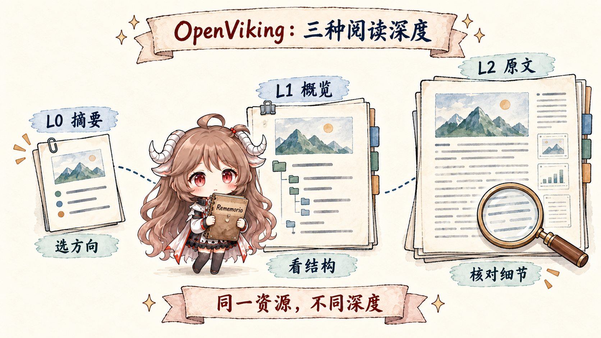
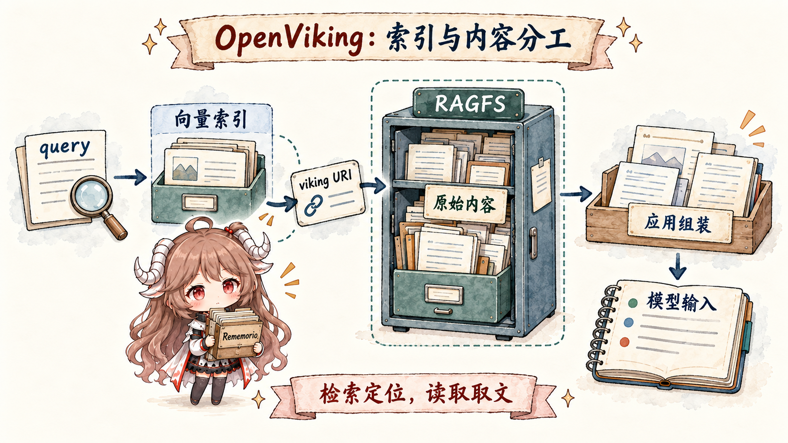
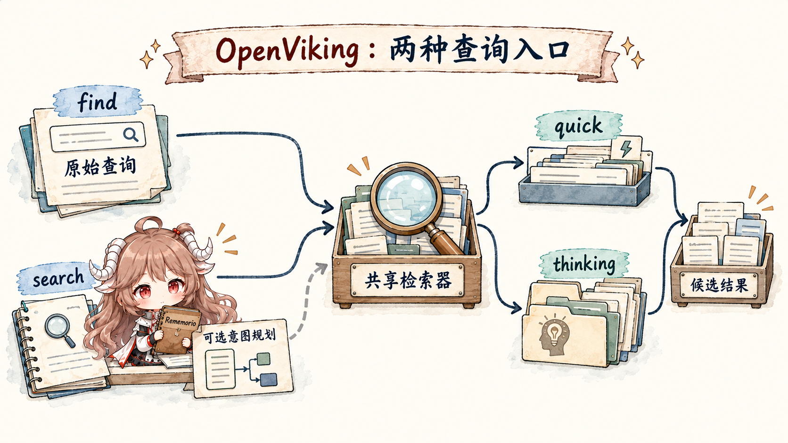
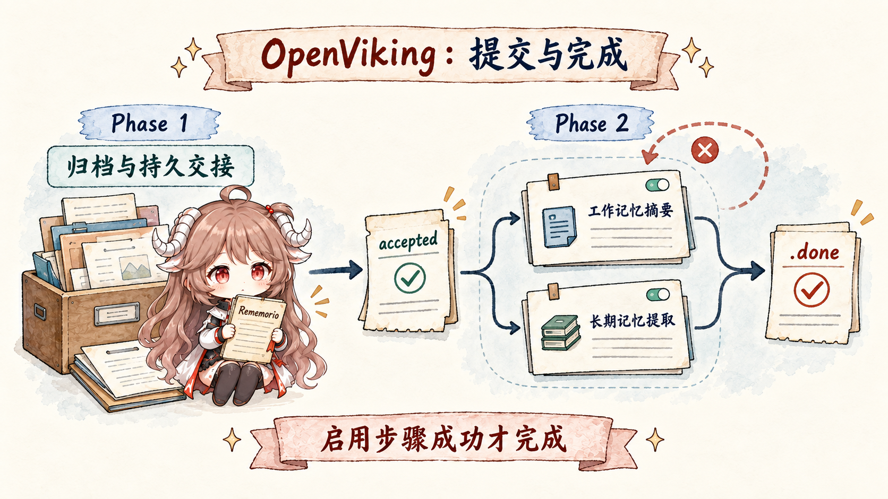
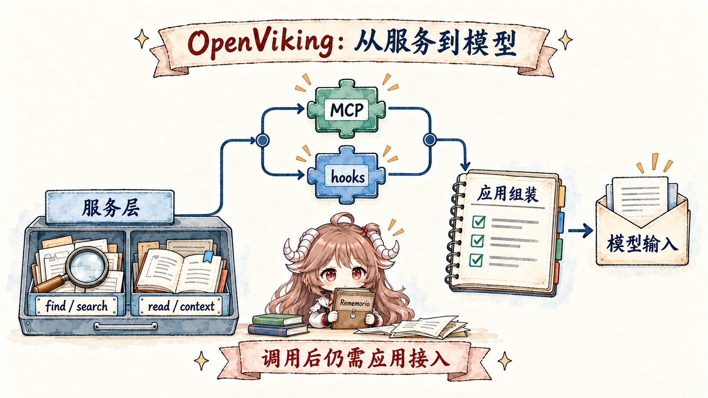

先把场景放在桌面上。你让 coding agent 修报销系统的重复扣款。它第一次调查时读过 billing 仓库、支付接口文档和三段测试日志， 最后发现问题可能在幂等键；你又明确说过“这里不要 mock 数据库”。两天后开一个新会话，只说： “继续上次那个报销 bug，先验证是不是租户配置导致的。”
这句话需要四种上下文一起到场：仓库和文档是资源，上次做到哪里的摘要是会话历史， “不要 mock 数据库”是长期记忆，而检查租户配置可能还要一套技能或工作流。 传统做法通常给它们各找一个家：文件进知识库，偏好进 memory store，技能留在本地目录，会话再由 agent runtime 保存。 每一层都能工作，真正麻烦的是下一轮回答要重新猜：去哪里找、找到以后读多深、哪些内容真的该进 prompt。
OpenViking 的核心答案不是“换一个更强的向量库”，而是先给上下文建立统一地址、层级和生命周期。
默认搜索返回候选；上下文模式还能按预算读取和组装材料。原始内容仍由内容存储作证，集成层决定何时调用以及怎样把结果放进本轮模型输入。
这个顺序如果读顺了，后面的 L0/L1/L2、find/search、session commit 就不再是一堆新名词，
而是从接入、定位、深读到恢复的连续过程。
读完后你应该能回答。
读完这一篇，应该能沿着同一个报销 bug 回答五件事：OpenViking 为什么把 resource、memory、skill 放进同一棵树；
一份仓库怎样先落原文、再异步生成 L0/L1 与索引；L0/L1/L2 为什么是阅读深度而不是三段记忆；
find 和 search 怎样找到候选；一次 session commit 为什么要拆成可恢复的两个阶段。
本文依据。 本文以 OpenViking 官方文档与公开仓库为事实基础，源码固定在 0f77ab56。 文档说明公开概念与 API；源码说明 ingest、retrieval 与 session commit 的实际调用链；“适合什么系统”属于基于这些证据的工程判断。 文档中标为规划中的 agent endpoint、tool/payment 等能力不写成已实现事实，项目自报 benchmark 也不作为本文结论。
一、它不是给 Agent 加一个记忆盒子，而是重画上下文的地址簿
1.1 三类材料为什么要进同一棵树
回到报销 bug。仓库里的 billing/retry.py 不会因为 agent 读过一次就变成用户记忆；
“不要 mock 数据库”也不应该混进公共项目文档；一套查租户配置的步骤更像可复用技能。
OpenViking 没有抹掉这些差别，而是让它们共享一套可寻址约定：先用 URI 表达“它属于哪个用户或账户、它是哪类上下文”，
再让不同类型保留各自生命周期。
viking://
├── resources/ # 公开或账户级资源
├── user/{user_id}/
│ ├── memories/ # 从交互与任务中长期保留的知识
│ ├── resources/ # 用户私有资源
│ ├── skills/ # 用户私有技能
│ └── sessions/{session_id}/ # 当前消息与历史归档
└── agent/
└── skills/ # 账户内共享技能
这棵树首先明确了保存位置。公共支付文档可以放在 viking://resources/；
用户专属的项目约束进入 viking://user/{user_id}/memories/；
某个团队共享的检查流程可以进入 viking://agent/skills/。
检索时系统不只拿到一段相似文本，还能拿到 URI、上下文类型、层级和作用域。
官方的上下文类型文档
也明确把 resource 解释为用户添加的静态材料，把 memory 解释为交互中学到的持久知识，把 skill 解释为可执行能力。
| 报销场景里的材料 | 更自然的归属 | 为什么不能混在一起 |
|---|---|---|
| billing 仓库、支付接口文档 | resource | 它们是外部证据，更新来自源材料，不来自一次聊天里的模型判断。 |
| “这个项目不要 mock 数据库” | memory | 它来自用户交互，需要按用户和策略隔离，并可能在未来会话召回。 |
| 检查租户配置的可靠步骤 | skill | 它表达“怎么做”，不只是关于项目的一条事实。 |
| 上次调查到幂等键的过程 | session archive | 它先是完整证据，归档后才可能按策略生成摘要与长期记忆。 |
1.2 “filesystem” 说的是交互方式，不是“数据库就是一堆本地文件”
OpenViking 常把自己称为 context filesystem。最容易产生的误读，是把这句话理解成“所有东西直接存在磁盘目录里”。
实际上，viking:// 是上层 URI 抽象：它提供类似 ls、read、mv、
abstract、overview、find 的访问方式，底层仍然把内容存储和索引存储分开。
filesystem 解决的是地址、层级和操作习惯，不能拿来推断部署一定简单，或数据只能落在本机文件系统。
二、一份仓库怎样长成上下文树：原文先落稳，语义随后补齐
现在把 billing 仓库作为一份新资源导入。最危险的做法，是一边让模型总结，一边把总结当成唯一存档：模型调用失败，资源就半进半出；
摘要写偏了，原文也失去独立证据。OpenViking 的 ingest 路径先解析源材料并构建最终 URI，再提交内容，
后面的 L0/L1 与向量索引由语义队列继续处理。这里的顺序比具体类名更重要：可恢复的原文先成为事实，模型生成的表示后到。

2.1 源码里的五步，比 README 的一句 add 更有解释力
ResourceProcessor.process_resource()
的 docstring 直接列出 parse、URI metadata、source commit、vector index、summarize；下面沿首次导入目录的常规语义处理路径看：实现先让 media processor 把内容写进临时区，
再由 TreeBuilder.finalize_from_temp() 生成最终 URI 与 temp_uri 元数据，随后
ResourceProcessor 调用 VikingFS.persist_temp_tree()
才把临时树提交到正式位置。解析器负责理解文件形状，TreeBuilder 负责定地址，VikingFS 负责落盘；它们都不是“让 LLM 读一遍仓库然后凭空造树”。
# 只保留源码调用链的骨架
parse_result = await media_processor.process(source=path, ...)
context_tree = await tree_builder.finalize_from_temp(
temp_dir_path=parse_result.temp_dir_path,
scope=scope,
to_uri=to,
)
root_uri = context_tree.root.uri
temp_uri = context_tree.root.temp_uri
await viking_fs.persist_temp_tree(temp_uri, root_uri, ...)
# 原文提交完成后，语义队列再生成 L0/L1 与索引
语义处理器的职责也写得很直白：
自底向上生成 .abstract.md 与 .overview.md，
再把这些表示向量化。子目录摘要先形成，父目录才有材料写自己的 overview；因此仓库不是被切成一袋互不相干的 chunk，
而是在保留目录关系的前提下长出一套导航层。
完成接入不等于已经可检索。
add_resource 成功与“每个节点的语义表示已经可检索”不是同一个时刻。异步队列、重试和 circuit breaker
给了摄取路径恢复能力，也带来了最终一致性。若业务要求“刚上传就必须搜到”，调用方要等待处理状态，而不能把 add 返回当作索引屏障。
五步描述的是常规摄取路径，不能推导出每次写入都会生成摘要。当前的
finish_prepared_resource()还区分已有目录更新、单文件和
vectors_only：后者跳过 L0/L1 生成，按需同步文件并建立向量索引；已有目录的同步也可能由后处理阶段接手。
因此，“文件已经保存”“摘要已经生成”“检索已经可见”应分别观察，图中的顺序对应首次导入新目录的常规路径。
三、L0、L1、L2：不是短期、中期、长期，而是同一份上下文的阅读深度
仓库进树以后，agent 不应该为一句“租户配置在哪里读”就吞下整个 billing 目录。OpenViking 给同一节点准备三种表示： L0 是很短的 abstract，用来快速判断这条路值不值得走；L1 是带结构的 overview，用来理解这一支有哪些材料、该下钻到哪里； L2 才是原始文件或完整内容。它们回答的是“读多深”，不是“记多久”。

viking://resources/billing/
├── .abstract.md # L0：这是什么，约百 token
├── .overview.md # L1：这一支有哪些内容、怎样继续读
├── .relations.json # 关联 URI
├── tenant-config.md # L2：完整文档
└── retry.py # L2：原始代码官方上下文层级文档 把 L0 的用途写成向量搜索与快速过滤，把 L1 写成 rerank 与内容导航，把 L2 写成按需加载的完整内容。 这个区分也解释了为什么检索结果里带 abstract 与 level 很有用：调用方可以先决定路径，再支付读取原文的 token 成本。
3.1 文件树负责作证，向量索引负责带路
有了三层表示，还要避免另一个误读：向量库里既然有 abstract，是不是它就成了真正的数据源？ OpenViking 的存储文档 给出的分工相反：RAGFS 一侧保存 L0/L1/L2 与关系，是内容 source of truth；向量库保存 URI、向量和元数据，用来找到候选。 删除、移动或重命名需要同步维护两边，但回答“原文到底写了什么”时，证据仍从内容层读取。

四、从检索候选到按预算组装上下文
先看默认的 list 模式。新会话里那句“继续上次那个报销 bug”，字面上没有 billing、幂等键、租户配置这些完整关键词。
如果应用已经知道要找什么，find 会把原始 query 直接交给检索器；如果应用把当前 session 一起交给
search，系统还可以先读归档摘要、最近消息和当前 query，把模糊请求拆成几条有类型、有优先级的查询。
规划之后，两条 API 都调用 HierarchicalRetriever.retrieve()：分界在要不要先做 session-aware query planning，
同时，find 显式选择 quick，search 的候选检索默认选择 thinking。

find 不做会话意图规划；search 在有 session context 且 intent 开启时先做 query planning。
quick / thinking 都属于共享检索器：thinking 沿高分目录继续下钻，quick 更接近平铺向量召回。
4.1 intent analyzer 不是“理解一切”，而是把本轮问题改写成受约束的查询计划
SearchService.search()
在 intent 开启且不是图像查询时，先从 session 取得最新可用 archive overview 和当前消息，再交给存储语义模块；存储语义模块在 intent 开启且上下文存在时，构造 IntentAnalyzer(max_recent_messages=5)。
analyzer 把压缩摘要、最近五条消息、当前问题和可选目标目录摘要交给 query planner，再生成多个 TypedQuery；
没有 session context，或 intent 被关闭时，就使用原始 query；图像查询走多模态 embedding 路径，跳过会话意图规划。这意味着 search 的“更懂任务”有明确条件，不是无条件多做一次 LLM 调用。
# 同一句模糊请求，可能被规划成受约束的三条查询
TypedQuery("billing duplicate charge idempotency", context_type=RESOURCE, priority=1)
TypedQuery("do not mock database", context_type=MEMORY, priority=2)
TypedQuery("inspect tenant configuration", context_type=SKILL, priority=2)
上面是便于理解的示意，不是项目保证的固定输出。真正的接口定义在
IntentAnalyzer：
每条 query 带 context_type、intent 与 priority；模型解析失败会暴露为错误，而不是悄悄假装计划成功。
4.2 thinking 模式为什么不是“多搜几次”
层级检索的关键，是目录本身也有 L0/L1。quick 模式在目标范围里直接做向量搜索并排序；thinking 模式先对 L0/L1 做全局搜索， 把高分目录放进优先队列，再只对这些目录的 children 继续搜索。 递归循环 会记录 visited URI、按分数传播、可选 rerank，并且只对非 L2 节点继续下钻——L2 文件是终点，不再当目录展开。
在这个候选检索路径上，最后得到的是 MatchedContext：URI、level、abstract、score 等候选信息，并按 memory/resource/skill 分类。
这一步非常容易被产品介绍写成“相关上下文自动进入模型”，但源码实际分成三步：默认 find/search 负责找到，read/overview 负责读取，
应用或插件负责决定本轮给模型看什么。如果只接了 MCP endpoint，却没有让 agent 主动调用工具，也没有 hooks 自动召回，数据库不会自己跳进 prompt。
4.3 context 模式把读取和预算也交给服务端
如果每个插件都自行循环搜索、读取原文、删掉重复项，再裁到预算以内，同一套数据会被不同宿主拼成不同上下文。
当前 POST /search 与 MCP search 因而提供显式的 mode="context"。
对报销任务，调用方可以指定 purpose="coding" 和 max_tokens=2000，让服务端生成一份可供注入的材料，
而不是自己逐条展开候选。它仍需要宿主实际调用，并把返回内容加入模型请求。
| 模式 | 服务端处理 | 调用方拿到什么 |
|---|---|---|
list（默认） | 检索、排序；可用 read_content 附带可读取正文。 | 候选列表，继续选择和组织材料。 |
context | 按类别配额召回，排除指定或近期已用 URI，按阅读深度取内容，再按 token 预算裁剪。 | HTTP 返回 entries、rendered、digest 和 stats；MCP 返回可用 digest，或退回 rendered。 |
组装管线先规划和搜集候选，只预读需要正文的项，再选择阅读深度并渲染；
可选的 rewrite 发生在其后，不应把它视为原文证据。跨轮去重依赖 session 中的召回记录，写记录失败时只保证尽力而为；
它记录的是服务端已提供的材料，不能证明下游模型实际看过或使用过。
max_tokens 控制这里的材料预算，不包含宿主额外的系统提示、历史和工具 schema。
HTTP 参数校验与MCP 工具 schema都把
max_tokens 限制为 64–32000、dedup_turns 限制为 0–100、
rewrite_max_bullets 限制为 1–20，exclude_uris 最多 200 项。
context 模式不接受 target_uri 或 read_content=true；需要指定目录搜索时仍应使用 list 模式。
这些约束让宿主能明确选择“返回候选”还是“返回已组装材料”，避免把两套参数混用。
五、会话怎样变成记忆：commit 先交接证据，再异步提炼
agent 修到一半要结束会话。最简单的 commit 是同步调用模型生成摘要，再清空旧消息；但只要模型超时、进程重启或写入中断， 就可能同时丢掉原消息和摘要。OpenViking 当前源码把 session commit 拆成两个阶段：Phase 1 在路径锁内重新读取权威消息， 规划保留窗口、写 raw archive、入持久队列并发布 ready marker；Phase 2 再由队列消费者按策略生成工作记忆摘要与长期记忆。

commit_async() 在 Phase 1 的证据与交接都持久化后就能返回 accepted；摘要与长期记忆提取在可恢复的 Phase 2 中按条件并发执行；全部启用步骤成功后才写 .done。
5.1 Phase 1 的目标不是“快”，而是建立不可含糊的交接点
Session.commit_async()
先在 path lock 内重载 messages.jsonl 与 meta，因为别的 worker 手里的 Session 对象可能已经过期；然后按消息数或 turn/token budget
规划 archive 与 retained tail。它并发保存 Phase 1 intent 和原始归档；归档消息位于 history/archive_NNN/messages.jsonl。两者成功后，
入 SESSION_COMMIT 持久队列、注册 task、改写 live root，最后把 phase1.status 标成 ready。
{
"status": "accepted",
"task_id": "...",
"archive_uri": "viking://user/.../sessions/.../history/archive_003",
"archived": true
}这个返回值表达的是“后台任务已经持久化并入队”，不是“长期记忆已经生成”。调用方若要在紧接着的下一步读取新记忆，仍应跟踪 task 状态。 但即使进程在 accepted 之后重启，原始 archive、队列消息和 ready marker 已经提供了恢复起点。
5.2 Phase 2 会提炼什么，由 policy 决定；.done 永远最后写
队列消费者最终调用
resume_queued_commit()。
它先检查 .done、.failed.json 与 Phase 1 ready 状态，再读 raw archive；真正进入 Phase 2 后，还会检查前一个 archive 是否已完成或已失败；仍有任务在处理时，本次暂缓执行。这个检查不会把前序失败误当成成功。
当前 Phase 2 的两条主要模型工作是工作记忆摘要与长期记忆提取。
working_memory.enabled 控制前者；后者还要求抽取开关、self/peer 范围、允许的类型和待处理消息都满足条件。
两条满足条件的任务并发执行，摘要不是长期提取的串行前置步骤；
session skill 结果随长期提取返回。成功的记忆变更可写入 memory_diff.json。
任一步骤在重试后仍失败，就不发布完成标记；已完成的长期提取保留消息 ID，恢复时跳过这些消息。
完成元数据保存后，.done 最后写。
不要把“self-evolving”理解成无条件自我改写。 profile、preferences、entities、events、identity、soul、cases、trajectories、experiences 等记忆类型在项目里都有位置，但实际提取受配置、memory policy、 用户/peer scope 与 agent-evolution 开关约束。更准确的说法是：OpenViking 提供一条可配置、可追踪的记忆提炼管线，而不是每轮都自动学会一切。
工作记忆摘要延续的是会话状态：当前任务、关键事实、约束与待办，而不只是逐次压缩后的聊天片段。
关闭它可以只保留其他获准的提取工作，所以看到 .done 不代表必然生成了摘要或新长期记忆。
它也不是全库索引的同步屏障：当前实现等待关联队列超时后仍可记录超时并完成提交，见
完成前的队列等待。
需要“下一条请求马上搜到”时，仍要验证相应数据与索引是否可见。
六、数据库有了上下文，谁把它送进这一轮回答
到这里，OpenViking 已经能存、找、读、归档，但报销 agent 仍可能一无所知。原因很朴素：数据库能力和 runtime 时机是两回事。
MCP 可以暴露 find、search、recall、remember 等工具，让 agent 主动调用；
hooks/plugin 则可以在 SessionStart、用户输入前、每轮结束和 compaction 前自动执行固定动作。两条路最后都要经过应用的 prompt 组装逻辑。

官方的 Codex 集成文档
给出完整生命周期：SessionStart 加载 profile 与索引，UserPromptSubmit 前召回，Stop 追加新对话，PreCompact 补齐并 commit，
支持 SessionEnd 的版本在正常退出时再提交。文档明确要求 Codex 0.145 及以上才有该退出事件；
/exit、连按两次 Ctrl-C 等正常退出可以触发，SIGTERM、强制关闭或崩溃仍不会触发。
缺少退出事件的会话由后续 SessionStart 按闲置 TTL 回收。接入时必须核对宿主版本和实际退出方式，不能把所有退出都归为“不会触发 hook”。
七、它把资源、会话和 Skill 也纳入记忆检索
OpenViking 不需要另开一个系列。它仍然在回答 Agent Memory 的核心问题：历史存在哪里，长期知识怎样提炼，谁执行检索，谁组装本轮模型输入。 但它把系列视野向外推了一层：不只管理从对话抽出的 memory record，还让 repo、docs、session archive 与 skill 共享地址和分层读取协议。 因此最自然的位置，是放在 TencentDB Agent Memory 之后、Cognee / Supermemory 之前。
| 项目 | 最先解决的压力 | OpenViking 与它的分界 |
|---|---|---|
| Mem0 | 从对话抽取、检索与排序长期 memory records。 | OpenViking 把 memory 放进更大的 resource / skill / session 上下文树。 |
| TencentDB Agent Memory | 当前工具日志如何 offload，团队资产如何按权限装配到 Agent。 | OpenViking 的 L0/L1/L2 是统一上下文的阅读深度，且强调 URI、摄取、检索与 session 持久队列。 |
| OpenViking | 散落在资源、记忆、技能和会话里的上下文怎样统一寻址、分层读取、可恢复更新。 | 它是上下文服务，不负责替应用做完整 Agent orchestration。 |
| Cognee / Supermemory | 把知识图谱、连接器、文件处理、profile/search API 产品化。 | 它们更偏向平台 API；OpenViking 更突出 filesystem 交互、层级检索与可追踪的 session lifecycle。 |
7.1 它也不是完整 agent framework
OpenViking 有 MCP、插件和 VikingBot 等集成，但核心仓库最稳定的责任仍是 context service：摄取材料、组织 URI、生成分层表示、检索候选、 保存 session 并按策略提炼 memory。它自己会调用模型生成摘要、规划查询和抽取记忆；但任务规划、面向用户的答案生成、代码执行、审批与动作编排仍要由上层 runtime 负责。 把它理解成“上下文服务”比“另一个全能 Agent”更接近源码职责。
八、什么时候值得用：资源、会话、记忆和 Skill 是否需要统一检索
OpenViking 把很多难题放进一套系统，同时也把运行面做厚了：Python service、Rust RAGFS、向量数据库、异步 QueueFS、embedding/VLM、 可选 reranker 与 query planner 都可能进入部署。语义摘要、intent query 与 memory extraction 还会引入模型误差； 摘要与改写结果仍需要回到原文核验。再加上主仓库 AGPL-3.0，生产接入前需要同时评估运维、质量与许可证要求。
例如 coding agent、研究 agent、企业知识 agent：任务会跨会话，原文证据必须可追溯，单一 top-k 向量检索已经不够。
团队接受“先找候选、再读深层、最后按预算注入”的集成责任，而不是期待数据库自动把正确 prompt 拼好。
如果一个普通 RAG pipeline 已经能稳定回答，完整的 session、queue、memory policy 与层级语义处理可能大于收益。
语义队列意味着最终一致，L0/L1、intent 与 memory 都可能受模型质量影响；这类系统需要额外状态等待、评测与失败回退。
用一句话收束：OpenViking 不是让 agent “多记一点”，而是让上下文从散落材料变成一棵有地址、有阅读深度、有恢复点的树。 对报销 agent 来说，真正的收益不是新会话里凭空“想起”幂等键，而是它能解释自己从哪条 session archive 找到线索， 沿哪支 resource tree 读到租户配置，又为什么把“不 mock 数据库”作为用户约束放进本轮模型输入。 当这些来源清楚以后，memory 才不只是一个神秘的相似度盒子。
系列位置。 上一篇是 TencentDB Agent Memory：从本地记忆，到团队记忆服务器； 下一篇是 Cognee / Supermemory：当多个 Agent 共用一套记忆服务。
参考资料
- volcengine/OpenViking
- OpenViking source snapshot: 0f77ab56
- Architecture
- Context types
- L0 / L1 / L2 context layers
- Storage architecture
- Retrieval
- Session management
- Codex memory plugin lifecycle
ResourceProcessor.process_resource()SemanticProcessor自底向上处理逻辑VikingFS.find()andsearch()HierarchicalRetrieverquick/thinking split- Recursive child search
Session.commit_async()Phase 1- Restart-safe Phase 2